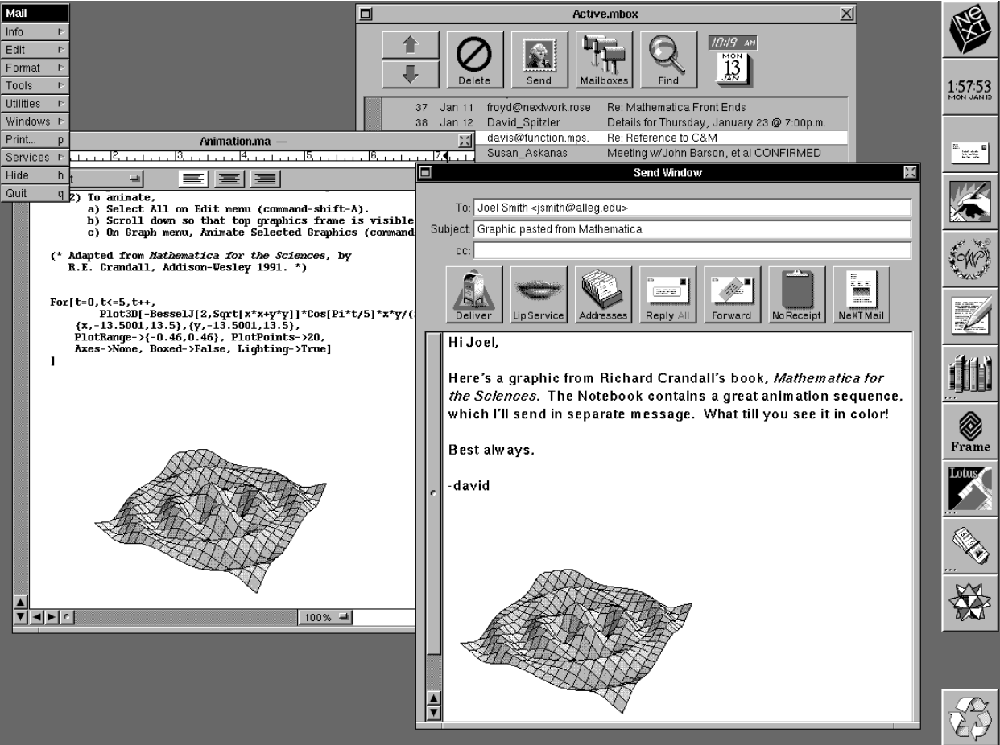

mathlibre-cについて
濱田龍義（日本大学/OCAMI）
2026年3月27日（金） 16:40-17:30
金沢大学角間キャンパス

Operating System
Hardware
Operating System
Operating System
Hardware
Operating System
Application
Operating System
Hardware
Virtual Machine
Hardware
Virtual Machine
Operating System
Hardware
Virtual Machine
VirtualMachine
Operating System
Hardware
Virtual Machine
Application
VirtualMachine
Operating System
Hardware
1991年
- 中央大学 松山善男 研究室
- 永井節夫さんと出会う


数学ソフトウェア
- 数学をあつかうソフトウェアのこと
- 数学の対象は広く，すべてをコンピュータで計算することは到底不可能だが、数値計算や数式処理を用いることで、様々な対象について計算を行うことが可能
- 高山信毅（神戸大学）
- 死ぬまでに, コンピュータと数学の問題に関して議論できたらというのが夢である. コンピュータプログラムは人間とは違う形のある意味の知性を持ち得るものと期待している.
- 生成AIの出現は解答の１つか？
数学ソフトウェアの抱える課題
- 開発の継続性
- ユーザ環境の構築
- 研究結果の再現性
1. 開発の継続性
SIMATHを知っていますか？
- 1988〜1997頃に開発された数論システム
- Horst G. Zimmer and his research group at the Universität des Saarlandes, Saarbrücken (Germany).
- C言語のライブラリとして開発
- https://zbmath.org/software/861
SIMATH
- SIMATHをどこから取得するか？
- SIMATHをどうやって利用するか？
- 2000年代，都立大の中村憲研究室で開発承継を検討
- その後，オープンソースソフトウェアとして新規開始
- NZMATH (https://nzmath.sourceforge.io/)
The Open Source Definition
- 再頒布の自由
- ソースコード
- 派生ソフトウェア
- 作者のソースコードの完全性 (Integrity)
- 個人やグループに対する差別の禁止
- 利用分野(fields of endeavor)に対する差別の禁止
- ライセンスの分配(distribution)
- 特定製品でのみ有効なライセンスの禁止
- 他のソフトウェアを制限するライセンスの禁止
- ライセンスは技術中立でなければならない
伽藍とバザール
The Cathedral and the Bazaar
- Fetchmail等の開発者である Eric S. Raymond によるソフトウェアエンジニアリングに関するエッセイ
- 1997年5月，ドイツのWürzburgで開催されたLinux Kongressで発表され，その後，1999年に書籍として出版
- Mozilla Firefoxの前身であるNetscape Navigatorのオープンソース化に影響を及ぼしたと言われる
- その後，様々な分野の研究ソフトウェアにも波及
Maxima (1998-)
- Macsyma: AI project of MIT (1968-1982), proprietary software
- 数学/第41巻(1989)
- 1998年に William Schelter によってオープンソース化
- 入力方法
2*x $\rightarrow 2x$，x^x $\rightarrow x^x$
diff(x^x, x);
integrate(1/(x^3+1), x);
f(x):=x^2-5*x+6; solve(f(x), x);

オープンソース化は継続のための手段のひとつ
2. ユーザ環境の構築
- Macaulay2 (1993-)
- Daniel Grayson (University of Illinois), Michael Stillman (Cornell University)を中心とするグループによって開発された可換環論や代数幾何学のための研究ツール
- Sun Workstation 上で動作
- 都立大博士課程の代数幾何学専攻の後輩が利用を希望?
- UnixやCコンパイラの知識が必要で断念
Linux
- 1991年9月17日フィンランドの大学院生Linus TorvardsによってLinux Kernelが公開
- Linux Kernelとは，OSの中核となるソフトウェアでシステムのリソースや，ハードウェアとソフトウェアの連携を管理するソフトウェア
- 現在普及しているUbuntuやDebian GNU/Linux, RedHat Linux等はLinux Distributionと呼ばれる．
- Linux DistributionはKernelとライブラリ等，様々なソフトウェアから構成される．

計算機環境の構築
- 1996年に福岡大応用数学科へ
- Unix計算機環境を自分で用意しないといけない
- RedHat Linux, Plamo Linux, Vine Linux, ...
- 30台以上の学生端末室を構築
KNOPPIX (2000-)
- ドイツのKlaus Knopperによって，KNOPPIXが開発，公開
- Live Linux と呼ばれ，CD/DVD や USBメモリから起動可能
- 2002-2015, 須崎有康（産総研）によって日本語版が公開

KNOPPIX/Math (2003-2012)
- 2003年からオープンソースソフトウェアの数学ソフトウェアを中心にKNOPPIX/Mathを開発，公開，配布
- 日本数学会2003年度年会にて須崎さんと共同で1000枚のKNOPPIX/Mathを用意
- JST-CREST 日比チーム(2008-2013)

MathLibre (2012-)
- オープンソース数学ソフトウェアの配布環境
- https://www.mathlibre.org/
- 数式処理システム
- 組版システム
- VirtualBox等の仮想環境に対応
Risa/Asir, Maxima, Sage, ...
$\TeX{}Live(\LaTeX{})$

MathLibreの利用方法
- DVDから起動
- USBメモリから起動
- 仮想マシンとして起動
BIOSやUEFIの設定が必要
作成が少し面倒。その都度、再起動が必要
DVD内部にドキュメントと仮想マシンを収録
仮想環境 Oracle VirtualBox のインストールが必要
Risa/Asir (OpenXM)
富士通研究所で開発された国産数式処理システム
高山信毅（神戸大学），野呂正行（立教大学）
小原功任（金沢大学），藤本光史（福岡教育大学）
グレブナー基底の計算で有名（「グレブナー道場」）
行列の基本変形や積分計算にも対応, 大島利雄（城西大学）
3. 研究結果の再現性
- 研究における数学ソフトウェアの利用の増加
- swMATH
- 仮想環境を利用して，開発停止したツールも利用可能
- バージョン間の差異も本当は問題
- 数学ソフトウェアアーカイブとしての価値
OSの概略図

Linux環境の概略図

Linuxパッケージ管理
- APT (Advanced Packaging Tool)
- DNF (Dandified Yum)
仮想環境の概略図

WSL2 や Homebrew の利用

WSL2やHomebrewにより，Linuxライクに利用可能
インストールにはLinuxの知識が必要
Linuxパッケージの追加
- make
- 自動化ツールの一種
- git
- 分散型バージョン管理システム
- podman
- コンテナエンジン
- 例1)
apt install make git podman - 例2)
dnf install make git podman
コンテナ環境
- 2013年3月に Docker が公開される
- https://www.docker.com/
- Linux上で動作するコンテナ環境
- サーバ環境を中心に普及
- docker.io, quay.io, ghcr.io 等のレジストリサービス
- 2018年 RedHatより Podman を公開
- DockerやPodmanのことをコンテナエンジンと呼ぶ
- コンテナとは？
コンテナ環境の概要と利点

- 軽量化
- 環境のパッケージ化
- 依存関係の分離
- 配布，取得が容易
- 再現性
Win, macのコンテナ環境

コンテナ環境 mathlibre-c の開発
動作環境例
- Linux
- Windows + WSL2
- macOS + Homebrew
環境構築後は全ての環境で同じように利用可能
コンテナ mathlibre-c の利用
git clone https://github.com/knxm/mathliber-c
cd mathlibre-c
make
podman pull --platform=linux/amd64 ghcr.io/knxm/openxm:latest
Trying to pull ghcr.io/knxm/openxm:latest...
Getting image source signatures
Copying blob sha256:51bc91e685e7ff3b6f6cb15249b350bc325f2d77321392898dcf37b557bd767b
Copying blob sha256:d860a1ef45bacf2ed2c1fb298a46a746e3fedb29b0835875128e4194f7e42c2f
Copying blob sha256:d8152a770ab0953434cd44cb0c44a878f385e99463ba787fa63599f9ebfc06d5
Copying blob sha256:b93b1bed91448ad53e6d7b0e2b47509fc966ac8a25a289770a1a9f1ab16f49df
Copying blob sha256:59a024026d2d06da1f1242eaf9ee8982c189a951ff70d58e6dbca1e0e58a303b
Copying blob sha256:73837a82eb8c09e6ec22ae06cf92c3ad65f070c2c03457a749b0604f976d4163
Copying blob sha256:1e6818064d4c78cf7efabdf2b8ceff5f592dfa0fcb0d07ee9c8035cb202c5e7d
Copying blob sha256:ac49fa29d8a9b58f49a34be846d90fe8456ccdd020851cfe4eed54b53646e0f9
Copying blob sha256:43f125477c3b3e6eef2019ec81bdc4d6c85c280b130ce2b9f85f5375e2f54fb0
Copying config sha256:d1fb0984aba9908c5e93cc991396a443e21442501fc805ecf6f142ee3b5e3610
Writing manifest to image destination
d1fb0984aba9908c5e93cc991396a443e21442501fc805ecf6f142ee3b5e3610
podman run -it --rm --name openxm --hostname mathlibre --userns=keep-id --platform=linux/amd64 -u 501:20 -e DISPLAY=host.docker.internal:0 -v "/Users/hamada/mathlibre-c/work:/work" -w /work ghcr.io/knxm/openxm:latest openxm asir
This is Risa/Asir, full GMP Version 20250329 (Kobe Distribution).
Copyright (C) 1994-2000, all rights reserved, FUJITSU LABORATORIES LIMITED.
Copyright 2000-2021, Risa/Asir committers, http://www.openxm.org/.
GC 7.6.12 copyright 1988-2018, H-J. Boehm, A. J. Demers, Xerox, SGI, HP, I. Maidanski.
Debug windows of ox servers will not be opened. Set Xm_noX=0 to open it.
OpenXM/Risa/Asir-Contrib $Revision$ (20250117), Copyright 2000-2025, OpenXM.org committers
helph(); [html help], ox_help(0); ox_help("keyword"); ox_grep("keyword");
for help messages (unix version only).
http://www.math.kobe-u.ac.jp/OpenXM/Current/doc/index-doc.html
[2113]
mathlibre-c
- openxm
- Risa/Asir (OpenXM) amd64 バイナリコンテナ
- Intel系CPU用, Apple SiliconではQEMU上で動作（低速）
- 約860MB
- openxm_from_git
- Risa/Asir (OpenXM) ソースビルドコンテナ
- CPUに合わせてソースコードからビルド（高速）
- 約4GB
どちらの場合もリポジトリghcr.ioから必要ファイルを取得
まとめ
- WSL2やHomebrewの存在によりLinux環境を容易に構築可能
- DockerやPodman等のコンテナエンジンの普及
- Risa/Asir(OpenXM)のPodmanコンテナを作成
- 容易に他の数学ソフトウェアにも転用可能
- 教育研究用途で利用可能
- リポジトリサービスghcr.ioで配布可能
- 研究結果再現性の確保